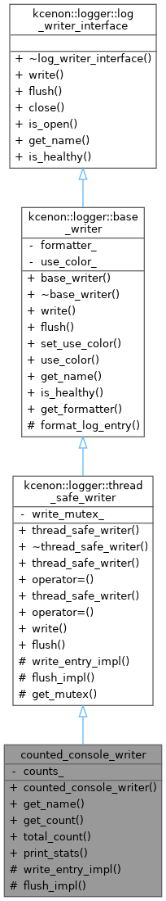
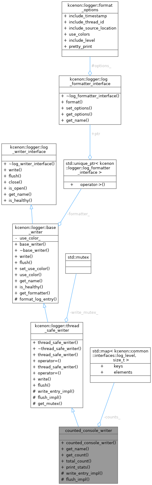
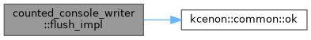
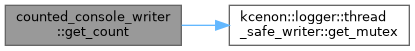
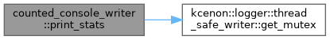
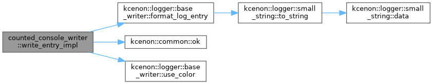

A console writer that counts messages per log level. More...


Public Member Functions | |
| counted_console_writer () | |
| std::string | get_name () const override |
| size_t | get_count (kcenon::common::interfaces::log_level level) const |
| Get count for a specific log level. | |
| size_t | total_count () const |
| Get total message count. | |
| void | print_stats () const |
| Print statistics summary. | |
 Public Member Functions inherited from kcenon::logger::thread_safe_writer Public Member Functions inherited from kcenon::logger::thread_safe_writer | |
| thread_safe_writer (std::unique_ptr< log_formatter_interface > formatter=nullptr) | |
| Constructor with optional formatter. | |
| ~thread_safe_writer () override=default | |
| Virtual destructor. | |
| thread_safe_writer (const thread_safe_writer &)=delete | |
| thread_safe_writer & | operator= (const thread_safe_writer &)=delete |
| thread_safe_writer (thread_safe_writer &&)=delete | |
| thread_safe_writer & | operator= (thread_safe_writer &&)=delete |
| common::VoidResult | write (const log_entry &entry) final |
| Thread-safe write operation for structured log entries. | |
| common::VoidResult | flush () final |
| Thread-safe flush operation. | |
| Public Member Functions inherited from kcenon::logger::base_writer | |
| base_writer (std::unique_ptr< log_formatter_interface > formatter=nullptr) | |
| Constructor with optional formatter. | |
| virtual | ~base_writer ()=default |
| virtual void | set_use_color (bool use_color) |
| Set whether to use color output (if supported) | |
| bool | use_color () const |
| Get current color output setting. | |
| virtual bool | is_healthy () const override |
| Check if the writer is healthy and operational. | |
| log_formatter_interface * | get_formatter () const |
| Get the current formatter. | |
| Public Member Functions inherited from kcenon::logger::log_writer_interface | |
| virtual | ~log_writer_interface ()=default |
| virtual common::VoidResult | close () |
| Close the writer and release resources. | |
| virtual auto | is_open () const -> bool |
| Check if writer is open and ready. | |
Protected Member Functions | |
| kcenon::common::VoidResult | write_entry_impl (const log_entry &entry) override |
| Implementation of structured write operation (override in derived classes) | |
| kcenon::common::VoidResult | flush_impl () override |
| Implementation of flush operation (override in derived classes) | |
| Protected Member Functions inherited from kcenon::logger::thread_safe_writer | |
| std::mutex & | get_mutex () const |
| Access the writer mutex for extended operations. | |
| Protected Member Functions inherited from kcenon::logger::base_writer | |
| std::string | format_log_entry (const log_entry &entry) const |
| Format a log entry using the current formatter. | |
Private Attributes | |
| std::map< kcenon::common::interfaces::log_level, size_t > | counts_ |
Detailed Description
A console writer that counts messages per log level.
Demonstrates extending thread_safe_writer for console output with statistics.
- Examples
- custom_writer_example.cpp.
Definition at line 121 of file custom_writer_example.cpp.
Constructor & Destructor Documentation
◆ counted_console_writer()
|
inline |
- Examples
- custom_writer_example.cpp.
Definition at line 123 of file custom_writer_example.cpp.
References counts_.
Member Function Documentation
◆ flush_impl()
|
inlineoverrideprotectedvirtual |
Implementation of flush operation (override in derived classes)
- Returns
- common::VoidResult Success or error code
Called by flush() while holding the mutex. Derived classes implement their output-specific flush logic here.
- Note
- The mutex is held when this method is called.
- Do not call public methods on 'this' (would cause deadlock).
- Since
- 1.3.0
Implements kcenon::logger::thread_safe_writer.
- Examples
- custom_writer_example.cpp.
Definition at line 206 of file custom_writer_example.cpp.
References kcenon::common::ok().

◆ get_count()
|
inline |
Get count for a specific log level.
- Examples
- custom_writer_example.cpp.
Definition at line 137 of file custom_writer_example.cpp.
References counts_, and kcenon::logger::thread_safe_writer::get_mutex().

◆ get_name()
|
inlineoverridevirtual |
Implements kcenon::logger::base_writer.
- Examples
- custom_writer_example.cpp.
Definition at line 130 of file custom_writer_example.cpp.
◆ print_stats()
|
inline |
Print statistics summary.
- Examples
- custom_writer_example.cpp.
Definition at line 158 of file custom_writer_example.cpp.
References counts_, and kcenon::logger::thread_safe_writer::get_mutex().

◆ total_count()
|
inline |
Get total message count.
- Examples
- custom_writer_example.cpp.
Definition at line 146 of file custom_writer_example.cpp.
References counts_, and kcenon::logger::thread_safe_writer::get_mutex().
◆ write_entry_impl()
|
inlineoverrideprotectedvirtual |
Implementation of structured write operation (override in derived classes)
- Parameters
-
entry The log entry to write (includes structured fields)
- Returns
- common::VoidResult Success or error code
Called by write(const log_entry&) while holding the mutex. Derived classes must override this method to implement their output logic.
- Note
- The mutex is held when this method is called.
- Do not call public methods on 'this' (would cause deadlock).
- Since
- 3.4.0
- 3.5.0 Now pure virtual - implementations must override this
Implements kcenon::logger::thread_safe_writer.
- Examples
- custom_writer_example.cpp.
Definition at line 170 of file custom_writer_example.cpp.
References counts_, kcenon::logger::base_writer::format_log_entry(), kcenon::logger::log_entry::level, kcenon::common::ok(), and kcenon::logger::base_writer::use_color().

Member Data Documentation
◆ counts_
|
mutableprivate |
- Examples
- custom_writer_example.cpp.
Definition at line 213 of file custom_writer_example.cpp.
Referenced by counted_console_writer(), get_count(), print_stats(), total_count(), and write_entry_impl().
The documentation for this class was generated from the following file:
- examples/custom_writer_example.cpp